CODING AGENTS AS PIXEL WORLD MODELS
traex/DeepSeek-V4.1-Flash · common50_0039
尚未保存可播放视频
In a fixed robotic workspace, a rigid and physically consistent embodied robotic arm with high stability and no deformation proceeds to Place the pink and green dragon fruit into the left gripper from the wooden table.
failed逐轮保存的候选
回放视频、检查图与代码变化。
每份候选均可单独播放。实际图片检查记录在下方工具轨迹中。
可观测工具轨迹
实际执行的命令与返回图片。
命令 1exit 0
/bin/bash -lc "pwd && rg --files -g 'prompt.txt' -g 'GENERATION_RULES.md' -g '*.png' -g '*.jpg' -g '*.py' -g '*.sh' -g '*.json' | sed -n '1,200p'"
命令 2exit 0
/bin/bash -lc "sed -n '1,240p' prompt.txt"
命令 3exit 0
/bin/bash -lc "sed -n '1,280p' GENERATION_RULES.md"
命令 4exit 0
/bin/bash -lc "find . -maxdepth 2 -type f -printf '%p\\t%k KB\\n' | sort | sed -n '1,240p'"
命令 5exit 0
/bin/bash -lc "sed -n '1,260p' artifact_io.py && printf '\\n--- task_spec ---\\n' && cat task_spec.json"
命令 6exit 0
/bin/bash -lc "python - <<'PY'
from PIL import Image
import numpy as np
im=Image.open('first_frame.png')
print(im.size, im.mode)
a=np.asarray(im)
print(a.shape, a.dtype, a.min(), a.max())
for y,x in [(80,128),(120,100),(115,200),(80,50),(80,210)]: print((x,y),a[y,x].tolist())
PY"命令 7exit 0
/bin/bash -lc "python - <<'PY'
from PIL import Image
im=Image.open('first_frame.png')
# upscale scene for inspection
im.resize((1024,640), Image.Resampling.LANCZOS).save('scene_upscaled.png')
# candidate crops fruit, left gripper, right gripper
for name,box in {'fruit':(65,95,135,130),'left':(20,80,75,160),'right':(150,75,225,160),'plate':(125,90,200,150)}.items():
im.crop(box).resize(((box[2]-box[0])*5,(box[3]-box[1])*5),Image.Resampling.LANCZOS).save(name+'_crop.png')
PY"命令 8exit 0
/bin/bash -lc "python - <<'PY'
from PIL import Image
import numpy as np
im=np.array(Image.open('first_frame.png'))
# find segmentation characteristics, print sampled rows/cols colors and rough masks
# fruit: red/pink saturation relative to table
for y in [100,105,110,115,120,125,130]:
xs=[]
for x in range(256):
r,g,b=im[y,x].astype(int)
if r>g+12 and r>b+3 and r>55 and y>95:
xs.append(x)
if xs: print(y,min(xs),max(xs),len(xs))
# plate gray dark
print('plate')
for y in [100,105,110,115,120,125,130,135,140]:
xs=[]
for x in range(256):
r,g,b=im[y,x].astype(int)
if abs(r-g)<12 and abs(g-b)<12 and r<155 and r>65 and 125<x<205:
xs.append(x)
if xs: print(y,min(xs),max(xs),len(xs))
PY"命令 9exit 0
/bin/bash -lc "python - <<'PY'
from PIL import Image,ImageDraw,ImageFont
im=Image.open('first_frame.png').resize((1024,640),Image.Resampling.NEAREST)
d=ImageDraw.Draw(im)
for x in range(0,256,10):
X=x*4
d.line((X,0,X,640),fill=(255,255,0),width=1)
if x%20==0:d.text((X+2,2),str(x),fill=(255,255,0))
for y in range(0,160,10):
Y=y*4
d.line((0,Y,1024,Y),fill=(255,255,0),width=1)
if y%20==0:d.text((2,Y+2),str(y),fill=(255,255,0))
im.save('grid.png')
PY"命令 10exit 0
/bin/bash -lc "python - <<'PY'
try:
import cv2; print('cv2',cv2.__version__)
except Exception as e: print('no cv2',e)
try:
import scipy; print('scipy',scipy.__version__)
except Exception as e: print('no scipy',e)
PY"命令 11exit 0
/bin/bash -lc "python - <<'PY'
from PIL import Image
im=Image.open('first_frame.png')
for name,box in {'right_low':(150,90,225,160),'left_low':(20,90,90,160),'fruit_region':(65,95,135,130),'handoff':(35,90,140,150)}.items():
im.crop(box).resize(((box[2]-box[0])*8,(box[3]-box[1])*8),Image.Resampling.NEAREST).save(name+'_x8.png')
PY"命令 12exit 0
/bin/bash -lc "python - <<'PY'
import cv2, numpy as np
from PIL import Image
im=cv2.imread('first_frame.png')
for name,rect in [('right',(155,78,221,159)),('left',(18,78,84,159)),('fruit',(70,97,134,136))]:
x1,y1,x2,y2=rect
m=np.zeros(im.shape[:2],np.uint8)
bgd=np.zeros((1,65),np.float64); fgd=np.zeros((1,65),np.float64)
cv2.grabCut(im,m,rect,bgd,fgd,8,cv2.GC_INIT_WITH_RECT)
mask=np.where((m==cv2.GC_FGD)|(m==cv2.GC_PR_FGD),255,0).astype(np.uint8)
out=im.copy(); out[mask>0]=(0.5*out[mask>0]+0.5*np.array([0,255,0])).astype(np.uint8)
cv2.imwrite(name+'_grab.png',out)
cv2.imwrite(name+'_mask.png',mask)
print(name,mask.sum()//255)
PY"命令 13exit 0
/bin/bash -lc "python - <<'PY'
import cv2, numpy as np
from PIL import Image
im=cv2.imread('first_frame.png')
# custom masks based on pixel location and appearance
# right arm/gripper: region x>=165 plus dark fingers to left; keep background from table
for name in ['right','left']:
m=np.zeros(im.shape[:2],np.uint8)
# right: arm polygon lower right and hand components; rough region via grabcut enhanced
PY"命令 14exit 0
/bin/bash -lc "python - <<'PY'
import cv2, numpy as np
m=cv2.imread('right_mask.png',0)
y,x=np.where(m>0)
print(x.min(),x.max(),y.min(),y.max(),len(x))
# row spans
for yy in range(80,151,5):
xs=np.where(m[yy]>0)[0]
if len(xs): print(yy,xs.min(),xs.max(),len(xs))
PY"命令 15exit 0
/bin/bash -lc "python - <<'PY'
from PIL import Image
import numpy as np
im=np.array(Image.open('first_frame.png')).astype(np.float32)
# print neighborhood rgb to find object extents; create hue/sat map
import cv2
hsv=cv2.cvtColor(im.astype(np.uint8),cv2.COLOR_RGB2HSV)
# fruit red hue range, mask broad
m=((hsv[:,:,0]<15)|(hsv[:,:,0]>165)) & (hsv[:,:,1]>70) & (np.indices(hsv.shape[:2])[0]>90) & (np.indices(hsv.shape[:2])[1]>60) & (np.indices(hsv.shape[:2])[1]<140)
print('fruit mask',m.sum())
y,x=np.where(m);print(x.min(),x.max(),y.min(),y.max())
# green stem mask
m2=(hsv[:,:,0]>25)&(hsv[:,:,0]<80)&(hsv[:,:,1]>50)&(np.indices(hsv.shape[:2])[0]>100)&(np.indices(hsv.shape[:2])[1]>65)&(np.indices(hsv.shape[:2])[1]<135)
y,x=np.where(m2);print('green mask',m2.sum(),x.min(),x.max(),y.min(),y.max())
PY"命令 16exit 0
/bin/bash -lc "python - <<'PY'
import cv2,numpy as np
im=cv2.imread('first_frame.png')
hsv=cv2.cvtColor(im,cv2.COLOR_BGR2HSV)
yy,xx=np.indices(im.shape[:2])
# inspect fruit colors around bbox and row boundaries
for y in range(95,136,5):
row=im[y,65:135]
# show color ranges of pixels that differ from table median perhaps
print(y, np.median(row,axis=0).astype(int))
# save saturation masks
rgb=cv2.cvtColor(im,cv2.COLOR_BGR2RGB)
h=cv2.cvtColor(rgb,cv2.COLOR_RGB2HSV)
for name,m in [('red',((h[:,:,0]<20)|(h[:,:,0]>160))&(h[:,:,1]>65)),('pink',(h[:,:,1]>35)&(h[:,:,2]>55))]:
m=m&(yy>95)&(yy<145)&(xx>65)&(xx<140)
cv2.imwrite(name+'.png',(m*255).astype('uint8'))
PY"命令 17exit 0
/bin/bash -lc "python - <<'PY'
from PIL import Image
im=Image.open('first_frame.png')
im.crop((55,90,145,140)).resize((900,500),Image.Resampling.NEAREST).save('fruit_big.png')
PY"命令 18exit 0
/bin/bash -lc "python - <<'PY'
import cv2,numpy as np
from PIL import Image
im=cv2.imread('first_frame.png')
h,w=im.shape[:2]
# right robot mask: start with grabcut inside rect, then hand-tuned polygon support and color cues
m=np.full((h,w),cv2.GC_BGD,np.uint8)
poly=np.array([[157,82],[183,79],[211,90],[223,117],[215,143],[213,159],[185,159],[178,132],[158,121]],np.int32)
roi=np.zeros((h,w),np.uint8); cv2.fillPoly(roi,[poly],1)
m[roi>0]=cv2.GC_PR_FGD
# known deep interior
poly2=np.array([[178,93],[196,91],[210,101],[212,122],[203,134],[187,131],[175,116]],np.int32)
cv2.fillPoly(m,[poly2],cv2.GC_FGD)
# exclude obvious table: high brightness, low chroma and outside fingers? use as background only far from hand
# apply grabcut with mask initialization
bg=np.zeros((1,65),np.float64);fg=np.zeros((1,65),np.float64)
cv2.grabCut(im,m,None,bg,fg,8,cv2.GC_INIT_WITH_MASK)
mask=((m==cv2.GC_FGD)|(m==cv2.GC_PR_FGD)).astype(np.uint8)*255
# keep only support polygon and dilate/close
mask[roi==0]=0
mask=cv2.morphologyEx(mask,cv2.MORPH_CLOSE,np.ones((3,3),np.uint8))
mask=cv2.dilate(mask,np.ones((2,2),np.uint8),iterations=1)
# don't let it touch curtain/table around left top: crop y>=82
mask[:82]=0
# add arm shaft x>205 y>118? grabcut likely catches
# overlay
out=im.copy(); out[mask>0]=(0.35*out[mask>0]+0.65*np.array([0,0,255])).astype(np.uint8)
cv2.imwrite('right_mask2_overlay.png',out);cv2.imwrite('right_mask2.png',mask)
print('mask area',mask.sum()//255)
# fruit ellipse mask
mf=np.zeros((h,w),np.uint8)
cv2.ellipse(mf,(103,115),(29,12),-4,0,360,255,-1)
# exclude outside actual fruit by keeping region; alpha feather later
out=im.copy(); out[mf>0]=(0.35*out[mf>0]+0.65*np.array([0,255,0])).astype(np.uint8)
cv2.imwrite('fruit_mask_overlay.png',out);cv2.imwrite('fruit_mask.png',mf)
PY"命令 19exit 0
/bin/bash -lc "python - <<'PY'
import cv2,numpy as np
im=cv2.imread('first_frame.png')
h,w=im.shape[:2]
# handcrafted right mask: use polygon around complete gripper and arm, then exclude table/background via color
poly=np.array([[156,79],[183,78],[201,86],[215,99],[220,121],[215,145],[219,159],[183,159],[174,133],[154,119],[160,105],[151,92]],np.int32)
roi=np.zeros((h,w),np.uint8);cv2.fillPoly(roi,[poly],255)
b,g,r=cv2.split(im)
# robot dark/neutral, but table also neutral. use HSV saturation and brightness; region exact
hsv=cv2.cvtColor(im,cv2.COLOR_BGR2HSV)
# inspect colors within hand; mask likely object if dark V or saturated metal
cand=((hsv[:,:,2]<170)&(roi>0)) | ((hsv[:,:,1]>45)&(roi>0))
# exclude warm table pixels based on hue? table yellow hue around 20-30 with moderate sat; robot dark mostly V<130
cand &= ~((hsv[:,:,0]>15)&(hsv[:,:,0]<40)&(hsv[:,:,1]<80)&(hsv[:,:,2]>120))
# connected components keep large ones
n,lab,stats,cent=cv2.connectedComponentsWithStats(cand.astype(np.uint8),8)
outmask=np.zeros((h,w),np.uint8)
for i in range(1,n):
if stats[i,cv2.CC_STAT_AREA]>15: outmask[lab==i]=255
outmask=cv2.morphologyEx(outmask,cv2.MORPH_CLOSE,np.ones((3,3),np.uint8),iterations=1)
# fill small holes
out=im.copy(); out[outmask>0]=(0.3*out[outmask>0]+0.7*np.array([0,0,255])).astype(np.uint8)
cv2.imwrite('right_mask3_overlay.png',out);cv2.imwrite('right_mask3.png',outmask)
print(outmask.sum()//255)
PY"命令 20exit 0
/bin/bash -lc "python - <<'PY'
import cv2,numpy as np
im=cv2.imread('first_frame.png'); hsv=cv2.cvtColor(im,cv2.COLOR_BGR2HSV)
# print selected rows around right hand in RGB and hsv to understand boundaries
rgb=cv2.cvtColor(im,cv2.COLOR_BGR2RGB)
for y in [85,90,95,100,105,110,115,120,125,130,135,140,145,150]:
print('y',y)
for x in range(150,226,5):
H,S,V=hsv[y,x]
if S>35 or V<150:
print(x, 'RGB',rgb[y,x].tolist(),'HSV',int(H),int(S),int(V), end='; ')
print()
PY"命令 21exit 0
/bin/bash -lc "python - <<'PY'
from PIL import Image
im=Image.open('first_frame.png')
im.crop((148,75,228,151)).resize((960,912),Image.Resampling.LANCZOS).save('right_hand_big.png')
PY"命令 22exit 0
/bin/bash -lc "python - <<'PY'
import cv2,numpy as np
im=cv2.imread('first_frame.png'); rgb=cv2.cvtColor(im,cv2.COLOR_BGR2RGB);hsv=cv2.cvtColor(rgb,cv2.COLOR_RGB2HSV)
# fruit mask from chroma + local crop, connected comp
crop=np.zeros(im.shape[:2],np.uint8);crop[100:130,68:138]=255
sat=hsv[:,:,1]; hue=hsv[:,:,0]; val=hsv[:,:,2]
m=((sat>45)&(val>45)&(crop>0)&(((hue<25)|(hue>150))|((hue>25)&(hue<95)&(val<180))))
# remove dark/table pixels near fruit by retaining largest connected region after morphological close
m=cv2.morphologyEx(m.astype(np.uint8),cv2.MORPH_CLOSE,np.ones((3,3),np.uint8),iterations=1)
n,lab,stats,cent=cv2.connectedComponentsWithStats(m,8)
out=np.zeros_like(m)
for i in range(1,n):
if stats[i,cv2.CC_STAT_AREA]>25: out[lab==i]=255
# include interior via contour fill? just dilate a bit, then maybe use hull
cnts,_=cv2.findContours(out,cv2.RETR_EXTERNAL,cv2.CHAIN_APPROX_SIMPLE)
hull=cv2.convexHull(np.vstack(cnts))
out2=np.zeros_like(m);cv2.fillPoly(out2,[hull],255)
out2=cv2.bitwise_and(out2,crop)
out3=im.copy();out3[out2>0]=(0.3*out3[out2>0]+0.7*np.array([0,255,0])).astype(np.uint8)
cv2.imwrite('fruit_mask2_overlay.png',out3);cv2.imwrite('fruit_mask2.png',out2)
print(out2.sum()//255)
PY"命令 23exit 0
/bin/bash -lc "python - <<'PY'
import cv2,numpy as np
im=cv2.imread('first_frame.png'); rgb=cv2.cvtColor(im,cv2.COLOR_BGR2RGB);hsv=cv2.cvtColor(rgb,cv2.COLOR_RGB2HSV)
y,x=np.indices(im.shape[:2]);
# Fruit color: pink/red dominant, x 72-132, y 101-127. Use Lab distance from local table plus red condition
lab=cv2.cvtColor(im,cv2.COLOR_BGR2LAB).astype(np.float32)
# table background estimate from ring around fruit
pts=np.r_[np.c_[x[(y>95)&(y<135)&(x>60)&(x<145)],y[(y>95)&(y<135)&(x>60)&(x<145)]]]
# just kmeans colors in region maybe
roi=im[95:135,60:145]
Z=roi.reshape(-1,3).astype(np.float32)
crit=(cv2.TERM_CRITERIA_EPS+cv2.TERM_CRITERIA_MAX_ITER,20,1)
K=5
_,labels,cent=cv2.kmeans(Z,K,None,crit,5,cv2.KMEANS_PP_CENTERS)
print(cent.astype(int))
for i,c in enumerate(cent):
print(i,(labels==i).sum())
# produce mask
m=(labels.reshape(roi.shape[:2])==i)
vis=np.zeros(im.shape[:2],np.uint8);vis[95:135,60:145]=m.astype(np.uint8)*255
cv2.imwrite('km%d.png'%i,vis)
PY"命令 24exit 0
/bin/bash -lc "python - <<'PY'
import cv2,numpy as np
im=cv2.imread('first_frame.png'); rgb=cv2.cvtColor(im,cv2.COLOR_BGR2RGB); hsv=cv2.cvtColor(rgb,cv2.COLOR_RGB2HSV)
y,x=np.indices(im.shape[:2]);
# build mask from likely red/pink pixels then polygon shape approximated using contour and fill
crop=(y>=99)&(y<=128)&(x>=70)&(x<=136)
red=(rgb[:,:,0].astype(int)-rgb[:,:,1].astype(int)>15)&(rgb[:,:,0]>50)
# green stem
green=(hsv[:,:,0]>25)&(hsv[:,:,0]<80)&(hsv[:,:,1]>35)&(y>=110)&(y<=124)&(x>=80)&(x<=100)
m=((red|crop&green)&crop).astype(np.uint8)
m=cv2.morphologyEx(m,cv2.MORPH_OPEN,np.ones((2,2),np.uint8))
# fill contour hull
cnts,_=cv2.findContours(m,cv2.RETR_EXTERNAL,cv2.CHAIN_APPROX_SIMPLE)
for c in cnts:
if cv2.contourArea(c)>10:
hull=cv2.convexHull(c)
cv2.fillPoly(m,[hull],1)
# clean remaining
m=cv2.morphologyEx(m,cv2.MORPH_CLOSE,np.ones((3,3),np.uint8),iterations=1)
out=im.copy();out[m>0]=(0.3*out[m>0]+0.7*np.array([0,255,0])).astype(np.uint8)
cv2.imwrite('fruit_mask3_overlay.png',out);cv2.imwrite('fruit_mask3.png',m*255)
print(m.sum())
PY"命令 25exit 0
/bin/bash -lc "python - <<'PY'
import cv2,numpy as np
im=cv2.imread('first_frame.png'); rgb=cv2.cvtColor(im,cv2.COLOR_BGR2RGB); hsv=cv2.cvtColor(rgb,cv2.COLOR_RGB2HSV)
# print grid of raw RGB crop fruit 10px samples
for y in range(98,131,3):
s=[]
for x in range(70,136,5):
r,g,b=rgb[y,x]
s.append('%3d,%3d,%3d'%(r,g,b))
print(y,' | '.join(s))
PY"命令 26exit 0
/bin/bash -lc "python - <<'PY'
import cv2,numpy as np
im=cv2.imread('first_frame.png'); rgb=cv2.cvtColor(im,cv2.COLOR_BGR2RGB).astype(int); hsv=cv2.cvtColor(rgb.astype(np.uint8),cv2.COLOR_RGB2HSV)
y,x=np.indices(im.shape[:2]);
# region includes fruit and stem; create all colors unlike table using red or green and dark boundary
crop=(y>=103)&(y<=125)&(x>=72)&(x<=136)
red=(rgb[:,:,0]-rgb[:,:,1]>20)&(rgb[:,:,0]>35)
green=(hsv[:,:,0]>25)&(hsv[:,:,0]<95)&(hsv[:,:,1]>20)&(y>=112)&(y<=123)&(x>=80)&(x<=99)
dark=(rgb.max(axis=2)<115)&(y>=110)&(y<=124)&(x>=80)&(x<=130)
m=((red|green|dark)&crop).astype(np.uint8)
# component cleanup
m=cv2.morphologyEx(m,cv2.MORPH_CLOSE,np.ones((3,3),np.uint8),iterations=2)
n,lab,stats,cent=cv2.connectedComponentsWithStats(m,8)
out=np.zeros_like(m)
for i in range(1,n):
if stats[i,cv2.CC_STAT_AREA]>20: out[lab==i]=1
# fill holes
out=cv2.morphologyEx(out,cv2.MORPH_CLOSE,np.ones((5,5),np.uint8),iterations=1)
vis=im.copy();vis[out>0]=(0.3*vis[out>0]+0.7*np.array([0,255,0])).astype(np.uint8)
cv2.imwrite('fruit_mask4_overlay.png',vis);cv2.imwrite('fruit_mask4.png',out*255)
print(out.sum())
PY"命令 27exit 0
/bin/bash -lc "python - <<'PY'
from PIL import Image
im=Image.open('first_frame.png')
im.crop((0,80,90,160)).resize((720,640),Image.Resampling.LANCZOS).save('left_hand_big.png')
PY"命令 28exit 0
/bin/bash -lc "python - <<'PY'
import cv2,numpy as np
im=cv2.imread('first_frame.png')
h,w=im.shape[:2]
# grabcut hand region
mask=np.zeros((h,w),np.uint8)
rect=(154,77,223,151)
bg=np.zeros((1,65),np.float64);fg=np.zeros((1,65),np.float64)
cv2.grabCut(im,mask,rect,bg,fg,12,cv2.GC_INIT_WITH_RECT)
m=((mask==cv2.GC_FGD)|(mask==cv2.GC_PR_FGD)).astype(np.uint8)
# restrict hand crop
roi=np.zeros((h,w),np.uint8);roi[77:151,154:223]=1;m&=roi
# add arm region based on dark/neutral color within polygon
poly=np.array([[200,125],[229,122],[256,145],[256,160],[185,160],[191,133]],np.int32)
armroi=np.zeros((h,w),np.uint8);cv2.fillPoly(armroi,[poly],1)
hsv=cv2.cvtColor(im,cv2.COLOR_BGR2HSV)
arm=((hsv[:,:,2]<180)&(armroi>0)).astype(np.uint8)
# but table in armroi? mostly shaft
m|=arm
m=cv2.morphologyEx(m,cv2.MORPH_CLOSE,np.ones((3,3),np.uint8),iterations=1)
m=cv2.dilate(m,np.ones((2,2),np.uint8),iterations=1)
# visualize alpha
vis=im.copy();vis[m>0]=(0.2*vis[m>0]+0.8*np.array([0,255,0])).astype(np.uint8)
cv2.imwrite('right_gc_overlay.png',vis);cv2.imwrite('right_gc_mask.png',m*255)
print(m.sum())
PY"命令 29exit 0
/bin/bash -lc "python - <<'PY'
from PIL import Image
im=Image.open('first_frame.png')
im.crop((0,0,256,95)).resize((1024,380),Image.Resampling.LANCZOS).save('table_big.png')
PY"命令 30exit 0
/bin/bash -lc "python - <<'PY'
import cv2,numpy as np
from PIL import Image
im=cv2.imread('first_frame.png'); h,w=im.shape[:2]
# manual mask based on image colors within right hand box, with polygon support
roi=np.zeros((h,w),np.uint8); roi[78:145,153:224]=1
rgb=im[:,:,::-1]; mx=rgb.max(2); mn=rgb.min(2)
# dark robot body
m=((mx<120)&(roi>0)).astype(np.uint8)
# include blueish metal with value<175
hsv=cv2.cvtColor(im,cv2.COLOR_BGR2HSV)
m|=(((hsv[:,:,0]>85)&(hsv[:,:,0]<135)&(hsv[:,:,1]>20)&(hsv[:,:,2]<180)&(roi>0))).astype(np.uint8)
# close within finger regions but not huge
m=cv2.morphologyEx(m,cv2.MORPH_CLOSE,np.ones((3,3),np.uint8),iterations=1)
# remove small
n,lab,stats,_=cv2.connectedComponentsWithStats(m,8)
out=np.zeros_like(m)
for i in range(1,n):
if stats[i,cv2.CC_STAT_AREA]>12: out[lab==i]=1
# fill some holes but preserve between fingers
out=cv2.morphologyEx(out,cv2.MORPH_CLOSE,np.ones((2,2),np.uint8),iterations=1)
# alpha blur 1 px
alpha=(cv2.GaussianBlur(out.astype(np.float32),(3,3),0.6)*255).astype(np.uint8)
# sprite crop
x1,y1,x2,y2=150,75,225,146
sprite=np.dstack([rgb[y1:y2,x1:x2],alpha[y1:y2,x1:x2]])
Image.fromarray(sprite,'RGBA').save('right_sprite.png')
# checker
checker=np.zeros((y2-y1,x2-x1,3),np.uint8); checker[::8]=220; checker[:,::8]=220
a=alpha[y1:y2,x1:x2,None]/255.; comp=(rgb[y1:y2,x1:x2]*a+checker*(1-a)).astype(np.uint8)
Image.fromarray(comp).resize((750,710),Image.Resampling.NEAREST).save('right_sprite_checker.png')
# overlay mask
vis=im.copy();vis[out>0]=(0.3*vis[out>0]+0.7*np.array([0,255,0])).astype(np.uint8)
cv2.imwrite('right_hand_mask_overlay.png',vis)
print(out.sum())
PY"命令 31exit 0
/bin/bash -lc "python - <<'PY'
import cv2,numpy as np
from PIL import Image
im=cv2.imread('first_frame.png'); h,w=im.shape[:2]
rgb=im[:,:,::-1]
# hand mask via grabcut better; output RGBA
mask=np.zeros((h,w),np.uint8)
rect=(155,80,215,138)
bg=np.zeros((1,65),np.float64);fg=np.zeros((1,65),np.float64)
cv2.grabCut(im,mask,rect,bg,fg,20,cv2.GC_INIT_WITH_RECT)
m=((mask==cv2.GC_FGD)|(mask==cv2.GC_PR_FGD)).astype(np.uint8)
roi=np.zeros((h,w),np.uint8);roi[78:145,154:218]=1;m&=roi
m=cv2.morphologyEx(m,cv2.MORPH_CLOSE,np.ones((3,3),np.uint8),iterations=1)
# include tiny dark finger tips
m=cv2.dilate(m,np.ones((2,2),np.uint8),iterations=1)
alpha=(cv2.GaussianBlur(m.astype(np.float32),(3,3),0.5)*255).astype(np.uint8)
x1,y1,x2,y2=150,76,220,145
sprite=np.dstack([rgb[y1:y2,x1:x2],alpha[y1:y2,x1:x2]])
Image.fromarray(sprite,'RGBA').save('right_sprite2.png')
vis=im.copy();vis[m>0]=(0.3*vis[m>0]+0.7*np.array([0,255,0])).astype(np.uint8)
cv2.imwrite('right_sprite2_overlay.png',vis)
print(m.sum())
PY"命令 32exit 0
/bin/bash -lc "python - <<'PY'
import cv2,numpy as np
from PIL import Image
im=cv2.imread('first_frame.png'); rgb=im[:,:,::-1]; h,w=im.shape[:2]
R,G,B=[rgb[:,:,i].astype(int) for i in range(3)]
hsv=cv2.cvtColor(im,cv2.COLOR_BGR2HSV); H,S,V=[hsv[:,:,i].astype(int) for i in range(3)]
y,x=np.indices((h,w))
support=((x>=155)&(x<=220)&(y>=78)&(y<=145))
# dark robot pixels and neutral metal; table is warm with R-B > 25
m=(((V<130)&(R-B<20)) | ((R-B<12)&(V<185)&(S<100)) | ((V<65))) & support
# remove plate gray with exclusion only if V>80
plate=((x>=150)&(x<=200)&(y>=108)&(y<=146)&(V>=75)&(V<165)&(S>12)&(S<70)&(H>70)&(H<120))
m &= ~plate
# close and retain large comps
m=cv2.morphologyEx(m.astype(np.uint8),cv2.MORPH_CLOSE,np.ones((3,3),np.uint8),iterations=1)
n,lab,stats,_=cv2.connectedComponentsWithStats(m,8)
out=np.zeros_like(m)
for i in range(1,n):
if stats[i,cv2.CC_STAT_AREA]>8: out[lab==i]=1
# manual include arm forearm lower right
arm=((x>200)&(y>120)&((R-B<20)|(V<90))).astype(np.uint8)
out|=arm
out=cv2.morphologyEx(out,cv2.MORPH_CLOSE,np.ones((2,2),np.uint8),iterations=1)
vis=im.copy();vis[out>0]=(0.25*vis[out>0]+0.75*np.array([0,255,0])).astype(np.uint8)
cv2.imwrite('hand_mask5_overlay.png',vis);cv2.imwrite('hand_mask5.png',out*255)
print('area',out.sum())
PY"命令 33exit 0
/bin/bash -lc "python - <<'PY'
import cv2,numpy as np
im=cv2.imread('first_frame.png'); h,w=im.shape[:2]
# Create plate mask using hue around blue-gray and ROI
rgb=im[:,:,::-1]; hsv=cv2.cvtColor(im,cv2.COLOR_BGR2HSV)
y,x=np.indices((h,w))
roi=(x>125)&(x<202)&(y>99)&(y<147)
m=roi&(hsv[:,:,0]>75)&(hsv[:,:,0]<130)&(hsv[:,:,1]>5)&(hsv[:,:,1]<90)&(hsv[:,:,2]>55)&(hsv[:,:,2]<185)
# morphology fill elliptical
m=cv2.morphologyEx(m.astype(np.uint8),cv2.MORPH_CLOSE,np.ones((5,5),np.uint8),iterations=2)
# fit ellipse hull maybe
vis=im.copy();vis[m>0]=(0.3*vis[m>0]+0.7*np.array([0,255,0])).astype(np.uint8)
cv2.imwrite('plate_mask_overlay.png',vis);cv2.imwrite('plate_mask.png',m*255)
print(m.sum())
PY"命令 34exit 0
/bin/bash -lc "python - <<'PY'
import cv2,numpy as np
im=cv2.imread('first_frame.png'); hsv=cv2.cvtColor(im,cv2.COLOR_BGR2HSV); y,x=np.indices(im.shape[:2]);
# Test hand mask area visually with grabcut rectangle only plus polygon exclusions
mask=np.zeros(im.shape[:2],np.uint8)
rect=(158,80,214,140)
bg=np.zeros((1,65),np.float64);fg=np.zeros((1,65),np.float64)
cv2.grabCut(im,mask,rect,bg,fg,10,cv2.GC_INIT_WITH_RECT)
m=((mask==cv2.GC_FGD)|(mask==cv2.GC_PR_FGD)).astype(np.uint8)
roi=np.zeros(im.shape[:2],np.uint8);roi[78:143,153:218]=1;m&=roi
m=cv2.morphologyEx(m,cv2.MORPH_CLOSE,np.ones((2,2),np.uint8),iterations=1)
vis=im.copy();vis[m>0]=(0.3*vis[m>0]+0.7*np.array([0,255,0])).astype(np.uint8)
cv2.imwrite('hand_gc10_overlay.png',vis)
print(m.sum())
PY"命令 35exit 0
/bin/bash -lc "python - <<'PY'
import cv2,numpy as np
im=cv2.imread('first_frame.png'); rgb=im[:,:,::-1]; hsv=cv2.cvtColor(im,cv2.COLOR_BGR2HSV); y,x=np.indices(im.shape[:2]);
R,G,B=[rgb[:,:,i].astype(int) for i in range(3)]
V=hsv[:,:,2];S=hsv[:,:,1];H=hsv[:,:,0]
# candidate robot with color and geometry
support=((x>=150)&(x<=224)&(y>=76)&(y<=146))
cand=((V<105)&(R-B<25))|((V<165)&(S<65)&(R-B<15))
# avoid warm table pixels
cand &= ~((R-B>25)&(V>100))
# remove plate via known elliptical area: plate has B>R, low chroma, V 100-160
plate=((x>=137)&(x<=201)&(y>=108)&(y<=147)&(B-R>4)&(S<70))
cand &= ~plate
# only y>? allow fingertips at x155 y95
m=(cand&support).astype(np.uint8)
# fill small holes
m=cv2.morphologyEx(m,cv2.MORPH_CLOSE,np.ones((3,3),np.uint8),iterations=1)
# manually add right arm region
arm=((x>205)&(y>117)&(V<160)&(R-B<25)).astype(np.uint8)
m|=arm
# visualize
vis=im.copy();vis[m>0]=(0.2*vis[m>0]+0.8*np.array([0,255,0])).astype(np.uint8)
cv2.imwrite('hand_color_overlay.png',vis);cv2.imwrite('hand_color_mask.png',m*255)
print(m.sum())
PY"命令 36exit 0
/bin/bash -lc "python - <<'PY'
import cv2,numpy as np
from PIL import Image
im=cv2.imread('first_frame.png'); rgb=im[:,:,::-1]; hsv=cv2.cvtColor(im,cv2.COLOR_BGR2HSV); y,x=np.indices(im.shape[:2]); R,G,B=[rgb[:,:,i].astype(int) for i in range(3)];V=hsv[:,:,2];S=hsv[:,:,1]
support=((x>=150)&(x<=224)&(y>=76)&(y<=146))
cand=((V<105)&(R-B<25))|((V<165)&(S<65)&(R-B<15))
cand &= ~((R-B>25)&(V>100))
plate=((x>=137)&(x<=201)&(y>=108)&(y<=147)&(B-R>4)&(S<70))
cand &= ~plate
m=(cand&support).astype(np.uint8)
m=cv2.morphologyEx(m,cv2.MORPH_CLOSE,np.ones((3,3),np.uint8),iterations=1)
arm=((x>205)&(y>117)&(V<160)&(R-B<25)).astype(np.uint8);m|=arm
# smooth alpha and crop sprite
alpha=(cv2.GaussianBlur(m.astype(np.float32),(3,3),0.5)*255).astype(np.uint8)
x1,y1,x2,y2=150,76,225,147
sprite=np.dstack([rgb[y1:y2,x1:x2],alpha[y1:y2,x1:x2]])
Image.fromarray(sprite,'RGBA').save('hand_color_sprite.png')
# make checker render
ch=np.zeros((y2-y1,x2-x1,3),np.uint8);ch[:]=(40,45,55);ch[::8]=(75,80,90);ch[:,::8]=(75,80,90)
a=alpha[y1:y2,x1:x2,None]/255.; comp=(rgb[y1:y2,x1:x2]*a+ch*(1-a)).astype(np.uint8)
Image.fromarray(comp).resize((750,710),Image.Resampling.NEAREST).save('hand_color_checker.png')
PY"命令 37exit 0
/bin/bash -lc "python - <<'PY'
import cv2,numpy as np
from PIL import Image
im=cv2.imread('first_frame.png'); rgb=im[:,:,::-1]; hsv=cv2.cvtColor(im,cv2.COLOR_BGR2HSV); y,x=np.indices(im.shape[:2]); R,G,B=[rgb[:,:,i].astype(int) for i in range(3)];V=hsv[:,:,2];S=hsv[:,:,1]
# Polygon silhouette for hand, excluding arm; keep all pixels within, then remove obvious table/background
poly=np.array([[163,92],[175,84],[191,81],[204,88],[214,100],[217,115],[213,131],[205,141],[193,145],[184,140],[176,128],[162,123],[154,112],[154,101]],np.int32)
roi=np.zeros(im.shape[:2],np.uint8);cv2.fillPoly(roi,[poly],1)
# all inside polygon are hand, but some table shows through gaps; preserve original colors and alpha based on silhouette. This is visually okay as rigid hand.
alpha=(roi*255).astype(np.uint8)
# soften 1 px
alpha=cv2.GaussianBlur(alpha.astype(np.float32),(3,3),0.6).astype(np.uint8)
x1,y1,x2,y2=152,78,219,146
sprite=np.dstack([rgb[y1:y2,x1:x2],alpha[y1:y2,x1:x2]])
Image.fromarray(sprite,'RGBA').save('hand_poly_sprite.png')
ch=np.zeros((y2-y1,x2-x1,3),np.uint8);ch[:]=(40,45,55);ch[::8]=(75,80,90);ch[:,::8]=(75,80,90)
a=alpha[y1:y2,x1:x2,None]/255.; comp=(rgb[y1:y2,x1:x2]*a+ch*(1-a)).astype(np.uint8)
Image.fromarray(comp).resize((670,680),Image.Resampling.NEAREST).save('hand_poly_checker.png')
# overlay
vis=im.copy();vis[roi>0]=(0.3*vis[roi>0]+0.7*np.array([0,255,0])).astype(np.uint8);cv2.imwrite('hand_poly_overlay.png',vis)
PY"命令 38exit 0
/bin/bash -lc "python - <<'PY'
import cv2,numpy as np
from PIL import Image
im=cv2.imread('first_frame.png'); rgb=im[:,:,::-1]
# polygon encompassing entire hand but excludes some obvious table gaps via support.
poly=np.array([[158,95],[163,89],[171,86],[180,82],[190,81],[200,83],[208,90],[214,98],[218,107],[218,118],[215,129],[211,137],[205,143],[199,147],[191,147],[186,142],[182,137],[176,131],[170,126],[163,123],[157,116],[154,108],[155,101]],np.int32)
roi=np.zeros(im.shape[:2],np.uint8);cv2.fillPoly(roi,[poly],1)
# keep gaps that are very bright table? no, hand fingers over table; removing would cause holes. preserve.
alpha=(roi*255).astype(np.uint8)
# crop tightly
x1,y1,x2,y2=152,79,220,149
sprite=np.dstack([rgb[y1:y2,x1:x2],alpha[y1:y2,x1:x2]])
Image.fromarray(sprite,'RGBA').save('hand_poly2_sprite.png')
# display checker
ch=np.zeros((y2-y1,x2-x1,3),np.uint8);ch[:]=(35,40,50);ch[::8]=(65,70,80);ch[:,::8]=(65,70,80)
a=alpha[y1:y2,x1:x2,None]/255.; comp=(rgb[y1:y2,x1:x2]*a+ch*(1-a)).astype(np.uint8)
Image.fromarray(comp).resize((680,700),Image.Resampling.NEAREST).save('hand_poly2_checker.png')
PY"命令 39exit 0
/bin/bash -lc "python - <<'PY'
from PIL import Image
im=Image.open('first_frame.png')
# nearest crop with coordinate grid every pixel? 8x
box=(70,98,138,130)
im.crop(box).resize(((box[2]-box[0])*12,(box[3]-box[1])*12),Image.Resampling.NEAREST).save('fruit_grid_x12.png')
PY"命令 40exit 0
/bin/bash -lc "python - <<'PY'
import cv2,numpy as np
im=cv2.imread('first_frame.png'); rgb=im[:,:,::-1]; hsv=cv2.cvtColor(im,cv2.COLOR_BGR2HSV); y,x=np.indices(im.shape[:2]); R,G,B=[rgb[:,:,i].astype(int) for i in range(3)];V=hsv[:,:,2];S=hsv[:,:,1]
poly=np.array([[158,94],[164,88],[173,85],[183,81],[194,82],[205,87],[212,94],[218,104],[219,115],[216,127],[211,137],[204,143],[196,145],[188,142],[182,135],[176,128],[168,124],[160,119],[155,111],[155,102]],np.int32)
support=np.zeros(im.shape[:2],np.uint8);cv2.fillPoly(support,[poly],1)
m=np.full(im.shape[:2],cv2.GC_BGD,np.uint8)
m[support>0]=cv2.GC_PR_FGD
# definite hand dark pixels and wrist metal
fg=((V<75)&(support>0)&(R-B<25)) | ((x>=187)&(x<=211)&(y>=115)&(y<=139)&(V<165)&(R-B<12))
m[fg]=cv2.GC_FGD
# definite background warm table and plate
bg=((support>0)&(R-B>30)&(V>105)) | ((x>=154)&(x<=200)&(y>=114)&(y<=145)&(B-R>5)&(S<80))
m[bg]=cv2.GC_BGD
bgv=np.zeros((1,65),np.float64);fgv=np.zeros((1,65),np.float64)
cv2.grabCut(im,m,None,bgv,fgv,20,cv2.GC_INIT_WITH_MASK)
out=((m==cv2.GC_FGD)|(m==cv2.GC_PR_FGD)).astype(np.uint8)
out[support==0]=0
out=cv2.morphologyEx(out,cv2.MORPH_CLOSE,np.ones((3,3),np.uint8),iterations=1)
# remove specks
n,lab,stats,_=cv2.connectedComponentsWithStats(out,8);clean=np.zeros_like(out)
for i in range(1,n):
if stats[i,cv2.CC_STAT_AREA]>10:clean[lab==i]=1
out=clean
vis=im.copy();vis[out>0]=(0.2*vis[out>0]+0.8*np.array([0,255,0])).astype(np.uint8)
cv2.imwrite('grab_seed_overlay.png',vis);cv2.imwrite('grab_seed_mask.png',out*255)
print(out.sum())
PY"命令 41exit 0
/bin/bash -lc "python - <<'PY'
import cv2,numpy as np
from PIL import Image
im=cv2.imread('first_frame.png'); rgb=im[:,:,::-1]; hsv=cv2.cvtColor(im,cv2.COLOR_BGR2HSV); y,x=np.indices(im.shape[:2]); R,G,B=[rgb[:,:,i].astype(int) for i in range(3)];V=hsv[:,:,2];S=hsv[:,:,1]
# hand silhouette more generous: cover fingers and base, exclude background outside
poly=np.array([[158,97],[160,90],[168,85],[178,81],[190,80],[201,84],[210,91],[216,100],[219,111],[219,122],[216,132],[211,140],[204,146],[196,148],[188,146],[183,140],[178,133],[171,128],[163,124],[157,118],[154,110],[154,103]],np.int32)
roi=np.zeros(im.shape[:2],np.uint8);cv2.fillPoly(roi,[poly],255)
# exclude obvious warm table background (not gaps)
mask=roi.copy()
# But use RGB as original, alpha silhouette. This keeps visible table in gaps but it's moving with hand, slight artifact; can refine later.
alpha=mask
x1,y1,x2,y2=152,78,221,150
sprite=np.dstack([rgb[y1:y2,x1:x2],alpha[y1:y2,x1:x2]])
Image.fromarray(sprite,'RGBA').save('hand_poly3_sprite.png')
# checker
ch=np.zeros((y2-y1,x2-x1,3),np.uint8);ch[:]=(35,40,50);ch[::8]=(65,70,80);ch[:,::8]=(65,70,80)
a=alpha[y1:y2,x1:x2,None]/255.;comp=(rgb[y1:y2,x1:x2]*a+ch*(1-a)).astype(np.uint8)
Image.fromarray(comp).resize(((x2-x1)*8,(y2-y1)*8),Image.Resampling.NEAREST).save('hand_poly3_checker.png')
PY"命令 42exit 0
/bin/bash -lc "python - <<'PY'
import cv2,numpy as np
from PIL import Image
im=cv2.imread('first_frame.png'); rgb=im[:,:,::-1]; hsv=cv2.cvtColor(im,cv2.COLOR_BGR2HSV); y,x=np.indices(im.shape[:2]); R,G,B=[rgb[:,:,i].astype(int) for i in range(3)];V=hsv[:,:,2];S=hsv[:,:,1]
# manual silhouette polygon closer to hand, includes wrist down to bottom and fingers
poly=np.array([[163,98],[163,93],[168,88],[175,84],[184,81],[194,81],[204,86],[212,93],[217,102],[219,112],[218,122],[215,131],[212,140],[209,147],[209,160],[188,160],[188,147],[182,138],[176,130],[168,126],[160,121],[155,114],[155,106]],np.int32)
roi=np.zeros(im.shape[:2],np.uint8);cv2.fillPoly(roi,[poly],255)
x1,y1,x2,y2=152,78,221,160
sprite=np.dstack([rgb[y1:y2,x1:x2],roi[y1:y2,x1:x2]])
Image.fromarray(sprite,'RGBA').save('hand_poly4_sprite.png')
ch=np.zeros((y2-y1,x2-x1,3),np.uint8);ch[:]=(35,40,50);ch[::8]=(65,70,80);ch[:,::8]=(65,70,80)
a=roi[y1:y2,x1:x2,None]/255.;comp=(rgb[y1:y2,x1:x2]*a+ch*(1-a)).astype(np.uint8)
Image.fromarray(comp).resize(((x2-x1)*6,(y2-y1)*6),Image.Resampling.NEAREST).save('hand_poly4_checker.png')
PY"命令 43exit 0
/bin/bash -lc "python - <<'PY'
from PIL import Image
im=Image.open('first_frame.png')
im.crop((145,78,226,160)).resize((648,656),Image.Resampling.LANCZOS).save('right_full_big.png')
PY"命令 44exit 0
/bin/bash -lc "python - <<'PY'
import cv2,numpy as np
from PIL import Image
im=cv2.imread('first_frame.png'); rgb=im[:,:,::-1]; hsv=cv2.cvtColor(im,cv2.COLOR_BGR2HSV); y,x=np.indices(im.shape[:2]); R,G,B=[rgb[:,:,i].astype(int) for i in range(3)];V=hsv[:,:,2];S=hsv[:,:,1]
# very generous hand mask from rectangle, but use original colors. We'll create lower and upper polygons separately to preserve wrist.
# support entire hand excluding top-left background
poly=np.array([[160,99],[160,92],[166,86],[174,82],[184,80],[195,81],[205,86],[214,94],[220,104],[221,114],[219,124],[216,133],[214,141],[213,160],[185,160],[185,145],[181,136],[175,129],[168,124],[161,119],[155,113],[154,106]],np.int32)
roi=np.zeros(im.shape[:2],np.uint8);cv2.fillPoly(roi,[poly],1)
# identify hand-colored pixels inside silhouette; fill gaps between fingers only in y>105 using morphology
base=((V<155)&(R-B<22)&(roi>0))|((V<185)&(S<65)&(R-B<12)&(roi>0))
base=base.astype(np.uint8)
# lower hand solid block y>=110 to include palm
base[((y>=108)&(y<=143)&(x>=168)&(x<=214)&(roi>0))]=1
# exclude plate region (x<200 y>114) if blue-gray
plate=((x>=154)&(x<=199)&(y>=112)&(y<=143)&(B-R>3)&(S<70))
base[plate]=0
# exclude table colored gaps in fingers: warm bright
base[((R-B>25)&(V>105)&(roi>0))]=0
# fill holes small
base=cv2.morphologyEx(base,cv2.MORPH_CLOSE,np.ones((3,3),np.uint8),iterations=1)
# use largest comps; but keep arm and fingers
n,lab,stats,_=cv2.connectedComponentsWithStats(base,8);out=np.zeros_like(base)
for i in range(1,n):
if stats[i,cv2.CC_STAT_AREA]>15:out[lab==i]=1
# Force lower palm connected shape
out=cv2.morphologyEx(out,cv2.MORPH_CLOSE,np.ones((5,5),np.uint8),iterations=1)
vis=im.copy();vis[out>0]=(0.2*vis[out>0]+0.8*np.array([0,255,0])).astype(np.uint8)
cv2.imwrite('hand_manual_overlay.png',vis);cv2.imwrite('hand_manual_mask.png',out*255)
print(out.sum())
# sprite
x1,y1,x2,y2=152,78,225,160
alpha=cv2.GaussianBlur(out.astype(np.float32),(3,3),0.4)*255;alpha=alpha.astype(np.uint8)
sprite=np.dstack([rgb[y1:y2,x1:x2],alpha[y1:y2,x1:x2]])
Image.fromarray(sprite,'RGBA').save('hand_manual_sprite.png')
PY"命令 45exit 0
/bin/bash -lc "python - <<'PY'
import cv2,numpy as np
im=cv2.imread('first_frame.png'); h,w=im.shape[:2]
# HSV mask for plate, then approximate ellipse and remove occluder where hand overlaps
hsv=cv2.cvtColor(im,cv2.COLOR_BGR2HSV)
y,x=np.indices((h,w));
m=(x>126)&(x<201)&(y>99)&(y<147)&(hsv[:,:,0]>70)&(hsv[:,:,0]<130)&(hsv[:,:,2]>65)&(hsv[:,:,2]<185)&(hsv[:,:,1]<100)
# exclude hand area x>150,y>110? plate under hand, leave existing only; no motion of plate
# reconstruct table under fruit using inpainting, and under hand using inpainting
src=im.copy()
# fruit region mask broad based on difference from local wood: use manual ellipse x 73-133 y 103-126
fruit=np.zeros((h,w),np.uint8);cv2.ellipse(fruit,(103,114),(31,13),-3,0,360,255,-1)
hand=np.zeros((h,w),np.uint8);cv2.ellipse(hand,(192,114),(29,35),0,0,360,255,-1)
# inpaint broad fruit region only; use texture synthesis? cv2 telea
bg=cv2.inpaint(im,fruit,5,cv2.INPAINT_TELEA)
bg2=cv2.inpaint(im,hand,5,cv2.INPAINT_TELEA)
cv2.imwrite('bg_fruit_inpaint.png',bg)
cv2.imwrite('bg_hand_inpaint.png',bg2)
cv2.imwrite('fruit_broad_mask.png',fruit)
cv2.imwrite('hand_broad_mask.png',hand)
PY"命令 46exit 0
/bin/bash -lc "python - <<'PY'
import cv2,numpy as np
im=cv2.imread('first_frame.png'); roi=im[78:160,150:226]; Z=roi.reshape(-1,3).astype(np.float32)
crit=(cv2.TERM_CRITERIA_EPS+cv2.TERM_CRITERIA_MAX_ITER,50,0.1)
for K in [6,8,10]:
_,lab,cent=cv2.kmeans(Z,K,None,crit,10,cv2.KMEANS_PP_CENTERS)
print('K',K)
for i,c in enumerate(cent):
print(i, c.astype(int), 'RGB', c[::-1].astype(int), 'n',(lab==i).sum())
PY"命令 47exit 0
/bin/bash -lc "python - <<'PY'
import cv2,numpy as np
im=cv2.imread('first_frame.png'); hsv=cv2.cvtColor(im,cv2.COLOR_BGR2HSV)
roi=im[78:160,150:226]; Z=roi.reshape(-1,3).astype(np.float32)
crit=(cv2.TERM_CRITERIA_EPS+cv2.TERM_CRITERIA_MAX_ITER,50,0.1);K=8
_,lab,cent=cv2.kmeans(Z,K,None,crit,10,cv2.KMEANS_PP_CENTERS)
lab=lab.reshape(roi.shape[:2]);
for i in range(K):
m=np.zeros(im.shape[:2],np.uint8);m[78:160,150:226]=(lab==i).astype(np.uint8)*255
cv2.imwrite('rk%d.png'%i,m)
# overlays for each
for i in range(K):
m=cv2.imread('rk%d.png'%i,0)>0
vis=im.copy();vis[m]=(0.2*vis[m]+0.8*np.array([0,255,0])).astype(np.uint8)
cv2.imwrite('rk%d_ov.png'%i,vis)
PY"命令 48exit 0
/bin/bash -lc "python - <<'PY'
import cv2,numpy as np
im=cv2.imread('first_frame.png'); rgb=im[:,:,::-1]; hsv=cv2.cvtColor(im,cv2.COLOR_BGR2HSV); y,x=np.indices(im.shape[:2]);
roi=im[78:160,150:226];Z=roi.reshape(-1,3).astype(np.float32);crit=(cv2.TERM_CRITERIA_EPS+cv2.TERM_CRITERIA_MAX_ITER,50,0.1);K=8
_,lab,cent=cv2.kmeans(Z,K,None,crit,10,cv2.KMEANS_PP_CENTERS);lab=lab.reshape(roi.shape[:2])
# candidate hand = dark classes + neutral grey, plus perhaps class 2 bright arm
classes=[0,2,3,4,6] # inspect centers: 0 dark 7, 1 table 139, 2 50, 3 85,4 34,5 table149,6 101,7 bright
m=np.zeros(im.shape[:2],np.uint8)
for i in classes:m[78:160,150:226]|=(lab==i).astype(np.uint8)
# remove plate from class 6 using plate polygon/region, remove background around top
plate=(x>=137)&(x<=202)&(y>=108)&(y<=147)&(rgb[:,:,2].astype(int)-rgb[:,:,0].astype(int)>4)
m[plate]=0
# exclude curtain/background top left of hand where support not; use support polygon hand
poly=np.array([[158,96],[164,88],[173,83],[184,81],[196,82],[207,88],[214,96],[219,106],[220,118],[217,130],[213,140],[211,160],[185,160],[185,145],[180,136],[173,128],[164,123],[157,116],[154,107],[155,101]],np.int32)
sp=np.zeros(im.shape[:2],np.uint8);cv2.fillPoly(sp,[poly],1);m&=sp
m=cv2.morphologyEx(m,cv2.MORPH_CLOSE,np.ones((3,3),np.uint8),iterations=1)
# remove tiny
n,lab2,stats,_=cv2.connectedComponentsWithStats(m,8);out=np.zeros_like(m)
for i in range(1,n):
if stats[i,cv2.CC_STAT_AREA]>10:out[lab2==i]=1
vis=im.copy();vis[out>0]=(0.2*vis[out>0]+0.8*np.array([0,255,0])).astype(np.uint8);cv2.imwrite('kmeans_hand_overlay.png',vis)
print(out.sum())
PY"命令 49exit 0
/bin/bash -lc "python - <<'PY'
import cv2,numpy as np
from PIL import Image
im=cv2.imread('first_frame.png'); rgb=im[:,:,::-1]; y,x=np.indices(im.shape[:2]);
# Use a fixed bounding box polygon tightly around visible hand, preserve all internal detail.
poly=np.array([[164,99],[164,94],[170,89],[178,85],[188,82],[199,83],[208,89],[214,97],[218,106],[219,116],[217,127],[213,137],[210,145],[209,160],[185,160],[186,145],[182,136],[176,129],[169,125],[162,120],[157,114],[155,106]],np.int32)
roi=np.zeros(im.shape[:2],np.uint8);cv2.fillPoly(roi,[poly],255)
# slightly feather with blur
alpha=cv2.GaussianBlur(roi.astype(np.float32),(3,3),0.55)
x1,y1,x2,y2=152,79,222,160
sprite=np.dstack([rgb[y1:y2,x1:x2],alpha[y1:y2,x1:x2].astype(np.uint8)])
Image.fromarray(sprite,'RGBA').save('hand_silhouette_sprite.png')
# checker
ch=np.zeros((y2-y1,x2-x1,3),np.uint8);ch[:]=(40,45,55);ch[::8]=(70,75,85);ch[:,::8]=(70,75,85)
a=alpha[y1:y2,x1:x2,None]/255.;comp=(rgb[y1:y2,x1:x2]*a+ch*(1-a)).astype(np.uint8)
Image.fromarray(comp).resize(((x2-x1)*6,(y2-y1)*6),Image.Resampling.NEAREST).save('hand_silhouette_checker.png')
PY"命令 50exit 0
/bin/bash -lc "python - <<'PY'
import cv2,numpy as np
from PIL import Image
im=cv2.imread('first_frame.png'); rgb=im[:,:,::-1]; hsv=cv2.cvtColor(im,cv2.COLOR_BGR2HSV); y,x=np.indices(im.shape[:2]); R,G,B=[rgb[:,:,i].astype(int) for i in range(3)];V=hsv[:,:,2];S=hsv[:,:,1]
poly=np.array([[160,99],[163,91],[170,85],[180,81],[191,80],[202,84],[211,91],[217,100],[220,111],[220,122],[216,133],[212,142],[210,160],[185,160],[185,145],[181,137],[174,129],[166,124],[158,118],[154,110],[154,103]],np.int32)
sp=np.zeros(im.shape[:2],np.uint8);cv2.fillPoly(sp,[poly],1)
m=((R-B<18)&(V<135)&(sp>0))|((V<75)&(sp>0))
# remove plate-ish
m &= ~((B-R>4)&(S<80)&(V>95)&(V<180))
# close tiny gaps, dilate to include highlights
m=m.astype(np.uint8);m=cv2.morphologyEx(m,cv2.MORPH_CLOSE,np.ones((3,3),np.uint8),iterations=1);m=cv2.dilate(m,np.ones((2,2),np.uint8),iterations=1);m&=sp
n,lab,stats,_=cv2.connectedComponentsWithStats(m,8);out=np.zeros_like(m)
for i in range(1,n):
if stats[i,cv2.CC_STAT_AREA]>8:out[lab==i]=1
# Fill holes maybe
vis=im.copy();vis[out>0]=(0.2*vis[out>0]+0.8*np.array([0,255,0])).astype(np.uint8);cv2.imwrite('mask_finaltest.png',vis)
# checker sprite
alpha=cv2.GaussianBlur(out.astype(np.float32),(3,3),0.45)*255
x1,y1,x2,y2=152,78,224,160
ch=np.zeros((y2-y1,x2-x1,3),np.uint8);ch[:]=(35,40,50);ch[::8]=(65,70,80);ch[:,::8]=(65,70,80)
a=alpha[y1:y2,x1:x2,None]/255.;comp=(rgb[y1:y2,x1:x2]*a+ch*(1-a)).astype(np.uint8)
Image.fromarray(comp).resize(((x2-x1)*6,(y2-y1)*6),Image.Resampling.NEAREST).save('mask_finaltest_checker.png')
print(out.sum())
PY"命令 51exit 0
/bin/bash -lc "python - <<'PY'
import cv2,numpy as np
from PIL import Image
im=cv2.imread('first_frame.png'); rgb=im[:,:,::-1]; hsv=cv2.cvtColor(im,cv2.COLOR_BGR2HSV); y,x=np.indices(im.shape[:2]); R,G,B=[rgb[:,:,i].astype(int) for i in range(3)];V=hsv[:,:,2];S=hsv[:,:,1]
poly=np.array([[160,99],[163,91],[170,85],[180,81],[191,80],[202,84],[211,91],[217,100],[220,111],[220,122],[216,133],[212,142],[210,160],[185,160],[185,145],[181,137],[174,129],[166,124],[158,118],[154,110],[154,103]],np.int32)
sp=np.zeros(im.shape[:2],np.uint8);cv2.fillPoly(sp,[poly],1)
m=((R-B<18)&(V<135)&(sp>0))|((V<75)&(sp>0))
m &= ~((B-R>4)&(S<80)&(V>95)&(V<180))
m=m.astype(np.uint8);m=cv2.morphologyEx(m,cv2.MORPH_CLOSE,np.ones((3,3),np.uint8),iterations=1);m=cv2.dilate(m,np.ones((2,2),np.uint8),iterations=1);m&=sp
n,lab,stats,_=cv2.connectedComponentsWithStats(m,8);out=np.zeros_like(m)
for i in range(1,n):
if stats[i,cv2.CC_STAT_AREA]>8:out[lab==i]=1
# fill holes in each component? Use contours fill external: merges finger gaps; avoid. fill only enclosed holes
contours,hier=cv2.findContours(out,cv2.RETR_CCOMP,cv2.CHAIN_APPROX_SIMPLE)
if hier is not None:
for i,h in enumerate(hier[0]):
if h[3]"'!=-1 and cv2.contourArea(contours[i])<20: cv2.drawContours(out,[contours[i]],-1,1,-1)
alpha=cv2.GaussianBlur(out.astype(np.float32),(3,3),0.5)
x1,y1,x2,y2=152,78,224,160
sprite=np.dstack([rgb[y1:y2,x1:x2],alpha[y1:y2,x1:x2].astype(np.uint8)])
Image.fromarray(sprite,'"'RGBA').save('hand_final_sprite.png')
print('mask',out.sum())
PY"命令 52exit 0
/bin/bash -lc "python - <<'PY'
import cv2,numpy as np
from PIL import Image
im=cv2.imread('first_frame.png'); rgb=im[:,:,::-1]; hsv=cv2.cvtColor(im,cv2.COLOR_BGR2HSV); y,x=np.indices(im.shape[:2]); R,G,B=[rgb[:,:,i].astype(int) for i in range(3)];V=hsv[:,:,2];S=hsv[:,:,1]
# make explicit hand silhouette based on visual. Use color filter but close/dilate, then remove plate via shape geometry.
poly=np.array([[159,99],[160,93],[165,88],[173,84],[182,81],[192,80],[202,83],[211,90],[217,99],[220,109],[220,120],[217,131],[214,140],[212,160],[185,160],[185,146],[181,137],[176,130],[168,125],[160,120],[155,114],[154,107]],np.int32)
sp=np.zeros(im.shape[:2],np.uint8);cv2.fillPoly(sp,[poly],1)
m=((V<150)&(R-B<18)&(sp>0))
m=cv2.morphologyEx(m.astype(np.uint8),cv2.MORPH_CLOSE,np.ones((3,3),np.uint8),iterations=2)
m=cv2.dilate(m,np.ones((2,2),np.uint8),iterations=1)
# remove plate area explicitly using a narrow mask x 150-201 y 108-148; keep only if pixel very dark or saturated robot
plate=((x>=150)&(x<=202)&(y>=108)&(y<=147))
m[plate & ~((V<95)&(R-B<12))]=0
# retain comps
n,lab,stats,_=cv2.connectedComponentsWithStats(m,8);out=np.zeros_like(m)
for i in range(1,n):
if stats[i,cv2.CC_STAT_AREA]>15:out[lab==i]=1
# include wrist below y145 x>185 from image dark
out[((y>=145)&(x>=185)&(x<=216)&(V<155)&(R-B<18))]=1
out&=sp
# fill contour hull? do not. alpha
alpha=cv2.GaussianBlur(out.astype(np.float32),(3,3),0.6)*255
x1,y1,x2,y2=152,78,224,160
sprite=np.dstack([rgb[y1:y2,x1:x2],alpha[y1:y2,x1:x2].astype(np.uint8)])
Image.fromarray(sprite,'RGBA').save('hand_sprite_final2.png')
# checker
ch=np.zeros((y2-y1,x2-x1,3),np.uint8);ch[:]=(35,40,50);ch[::8]=(65,70,80);ch[:,::8]=(65,70,80)
a=alpha[y1:y2,x1:x2,None]/255.;comp=(rgb[y1:y2,x1:x2]*a+ch*(1-a)).astype(np.uint8)
Image.fromarray(comp).resize(((x2-x1)*6,(y2-y1)*6),Image.Resampling.NEAREST).save('hand_final2_checker.png')
vis=im.copy();vis[out>0]=(0.25*vis[out>0]+0.75*np.array([0,255,0])).astype(np.uint8);cv2.imwrite('hand_final2_overlay.png',vis)
print(out.sum())
PY"命令 53exit 0
/bin/bash -lc "python - <<'PY'
import cv2,numpy as np
im=cv2.imread('first_frame.png');rgb=im[:,:,::-1];hsv=cv2.cvtColor(im,cv2.COLOR_BGR2HSV);y,x=np.indices(im.shape[:2]);R,G,B=[rgb[:,:,i].astype(int) for i in range(3)];V=hsv[:,:,2];S=hsv[:,:,1]
poly=np.array([[159,99],[160,93],[165,88],[173,84],[182,81],[192,80],[202,83],[211,90],[217,99],[220,109],[220,120],[217,131],[214,140],[212,160],[185,160],[185,146],[181,137],[176,130],[168,125],[160,120],[155,114],[154,107]],np.int32)
sp=np.zeros(im.shape[:2],np.uint8);cv2.fillPoly(sp,[poly],1)
m=((V<160)&(R-B<25)&(sp>0)) & ~((R-B>30)&(V>100))
# plate exclusion only region clearly plate and not robot dark
plate=((x>=151)&(x<=202)&(y>=113)&(y<=147)&(B-R>1)&(S<85)&(V>90)&(V<180))
m[plate]=0
# fill small holes
m=m.astype(np.uint8);m=cv2.morphologyEx(m,cv2.MORPH_CLOSE,np.ones((3,3),np.uint8),iterations=2);m=cv2.dilate(m,np.ones((2,2),np.uint8),iterations=1);m&=sp
# Keep comps
n,lab,stats,_=cv2.connectedComponentsWithStats(m,8);out=np.zeros_like(m)
for i in range(1,n):
if stats[i,cv2.CC_STAT_AREA]>20:out[lab==i]=1
# force palm filled only region between fingers? lower palm likely missing; add based on x>185,y>115 dark
out[((x>=185)&(x<=214)&(y>=112)&(y<=143)&(V<170)&(R-B<20))]=1
# remove plate from forced
out[plate]=0
# hand arm connect
out[((x>=207)&(y>=125)&(x<=225)&(V<170)&(R-B<20))]=1
alpha=cv2.GaussianBlur(out.astype(np.float32),(3,3),0.5)*255
x1,y1,x2,y2=152,78,225,160
from PIL import Image
sprite=np.dstack([rgb[y1:y2,x1:x2],alpha[y1:y2,x1:x2].astype(np.uint8)]);Image.fromarray(sprite,'RGBA').save('hand_sprite_final3.png')
ch=np.zeros((y2-y1,x2-x1,3),np.uint8);ch[:]=(35,40,50);ch[::8]=(65,70,80);ch[:,::8]=(65,70,80)
a=alpha[y1:y2,x1:x2,None]/255.;comp=(rgb[y1:y2,x1:x2]*a+ch*(1-a)).astype(np.uint8);Image.fromarray(comp).resize(((x2-x1)*6,(y2-y1)*6),Image.Resampling.NEAREST).save('hand_final3_checker.png')
print(out.sum())
PY"命令 54exit 0
/bin/bash -lc "python - <<'PY'
import cv2,numpy as np
im=cv2.imread('first_frame.png'); rgb=im[:,:,::-1]; hsv=cv2.cvtColor(im,cv2.COLOR_BGR2HSV); y,x=np.indices(im.shape[:2]); R,G,B=[rgb[:,:,i].astype(int) for i in range(3)];V=hsv[:,:,2];S=hsv[:,:,1]
poly=np.array([[159,99],[160,93],[165,88],[173,84],[182,81],[192,80],[202,83],[211,90],[217,99],[220,109],[220,120],[217,131],[214,140],[212,160],[185,160],[185,146],[181,137],[176,130],[168,125],[160,120],[155,114],[154,107]],np.int32)
sp=np.zeros(im.shape[:2],np.uint8);cv2.fillPoly(sp,[poly],1)
m=((V<150)&(R-B<22)&(sp>0))
# make plate exclusion smaller: only pixels that are clearly plate, not robot
plate=((x>=150)&(x<=201)&(y>=114)&(y<=146)&(B-R>6)&(S<65)&(V>90))
m[plate]=0
m=m.astype(np.uint8);m=cv2.morphologyEx(m,cv2.MORPH_CLOSE,np.ones((3,3),np.uint8),iterations=2);m=cv2.dilate(m,np.ones((2,2),np.uint8),iterations=1);m&=sp
n,lab,stats,_=cv2.connectedComponentsWithStats(m,8);out=np.zeros_like(m)
for i in range(1,n):
if stats[i,cv2.CC_STAT_AREA]>18:out[lab==i]=1
# include palm under darker pixels, but do not include table: based on RGB at x 190-215 y 110-142
region=((x>=183)&(x<=214)&(y>=108)&(y<=142))
hand=(V<155)&(R-B<25)®ion
out[hand]=1
# wrist/forearm dark or gray
out[((x>=207)&(y>=125)&(x<=225)&(V<170)&(R-B<25))]=1
# remove plate again
out[plate]=0
# keep connected to hand from seed point
n,lab,stats,_=cv2.connectedComponentsWithStats(out,8);seed=lab[105,185];out=(lab==seed).astype(np.uint8) if seed>0 else out
# but wrist should be included if separate; add comps overlapping region x>205,y>125 and area>50
for i in range(1,n):
if stats[i,cv2.CC_STAT_AREA]>50 and stats[i,cv2.CC_STAT_LEFT]+stats[i,cv2.CC_STAT_WIDTH]>208 and stats[i,cv2.CC_STAT_TOP]+stats[i,cv2.CC_STAT_HEIGHT]>140:
out[lab==i]=1
alpha=cv2.GaussianBlur(out.astype(np.float32),(3,3),0.5)*255
from PIL import Image
x1,y1,x2,y2=152,78,225,160
sprite=np.dstack([rgb[y1:y2,x1:x2],alpha[y1:y2,x1:x2].astype(np.uint8)]);Image.fromarray(sprite,'RGBA').save('hand_sprite_final4.png')
ch=np.zeros((y2-y1,x2-x1,3),np.uint8);ch[:]=(35,40,50);ch[::8]=(65,70,80);ch[:,::8]=(65,70,80)
a=alpha[y1:y2,x1:x2,None]/255.;comp=(rgb[y1:y2,x1:x2]*a+ch*(1-a)).astype(np.uint8);Image.fromarray(comp).resize(((x2-x1)*6,(y2-y1)*6),Image.Resampling.NEAREST).save('hand_final4_checker.png')
print(out.sum())
PY"命令 55exit 0
/bin/bash -lc "python - <<'PY'
import cv2,numpy as np
im=cv2.imread('first_frame.png'); rgb=im[:,:,::-1]; hsv=cv2.cvtColor(im,cv2.COLOR_BGR2HSV); y,x=np.indices(im.shape[:2]); R,G,B=[rgb[:,:,i].astype(int) for i in range(3)];V=hsv[:,:,2];S=hsv[:,:,1]
# Use a broad silhouette from top fingers to wrist; alpha starts from ROI and subtract table/plate based on color, preserving finger gaps via transparent pixels.
poly=np.array([[158,101],[160,94],[166,88],[174,83],[184,80],[195,81],[205,86],[214,94],[220,104],[221,114],[219,125],[216,134],[213,143],[213,160],[185,160],[185,146],[181,138],[176,130],[168,125],[161,120],[156,114],[154,108]],np.int32)
sp=np.zeros(im.shape[:2],np.uint8);cv2.fillPoly(sp,[poly],255)
# alpha: object pixels based on color; all dark robot and mid gray; preserve finger gaps (table warm excluded)
obj=((V<150)&(R-B<25))|((V<185)&(S<65)&(R-B<12))
plate=((x>=148)&(x<=202)&(y>=110)&(y<=147)&(B-R>2)&(S<80))
obj &= ~plate
# include arm dark region regardless
obj |= ((x>=210)&(y>=125)&(V<180)&(R-B<25))
a=(sp>0)&obj
# dilate modestly and blur alpha
a=cv2.dilate(a.astype(np.uint8),np.ones((2,2),np.uint8),iterations=1)
a=cv2.GaussianBlur(a.astype(np.float32),(3,3),0.45)*255
x1,y1,x2,y2=152,78,225,160
from PIL import Image
sprite=np.dstack([rgb[y1:y2,x1:x2],a[y1:y2,x1:x2].astype(np.uint8)]);Image.fromarray(sprite,'RGBA').save('hand_sprite_final5.png')
ch=np.zeros((y2-y1,x2-x1,3),np.uint8);ch[:]=(35,40,50);ch[::8]=(65,70,80);ch[:,::8]=(65,70,80)
av=a[y1:y2,x1:x2,None]/255.;comp=(rgb[y1:y2,x1:x2]*av+ch*(1-av)).astype(np.uint8);Image.fromarray(comp).resize(((x2-x1)*6,(y2-y1)*6),Image.Resampling.NEAREST).save('hand_final5_checker.png')
print((a>127).sum())
PY"命令 56exit 0
/bin/bash -lc "python - <<'PY'
import cv2,numpy as np
from PIL import Image
im=cv2.imread('first_frame.png'); rgb=im[:,:,::-1]; hsv=cv2.cvtColor(im,cv2.COLOR_BGR2HSV); y,x=np.indices(im.shape[:2]); R,G,B=[rgb[:,:,i].astype(int) for i in range(3)];V=hsv[:,:,2];S=hsv[:,:,1]
# separate hand into fingers (top) and palm/wrist (bottom), using polygons around actual hand only
finger_poly=np.array([[160,98],[164,90],[171,85],[180,82],[191,81],[202,84],[210,90],[216,98],[219,106],[215,114],[207,116],[199,114],[193,109],[188,110],[181,113],[174,115],[166,113],[160,108]],np.int32)
palm_poly=np.array([[183,109],[194,106],[204,109],[213,115],[218,126],[214,138],[212,160],[184,160],[184,145],[181,135],[183,123]],np.int32)
f=np.zeros(im.shape[:2],np.uint8);cv2.fillPoly(f,[finger_poly],1)
p=np.zeros(im.shape[:2],np.uint8);cv2.fillPoly(p,[palm_poly],1)
# fingers: keep colored hand pixels but exclude table/plate; palm: mostly robot
obj=((V<160)&(R-B<22))|((V<75))
obj &= ~((R-B>28)&(V>100))
plate=((x>=145)&(x<=202)&(y>=112)&(y<=146)&(B-R>1)&(S<85)&(V>90))
obj &= ~plate
m=((f>0)&obj)|((p>0)&obj)
# Add right wrist dark shaft
m |= ((x>=210)&(y>=125)&(V<180)&(R-B<22))
# Dilation and fill enclosed holes
m=cv2.dilate(m.astype(np.uint8),np.ones((2,2),np.uint8),iterations=1)
m=cv2.morphologyEx(m,cv2.MORPH_CLOSE,np.ones((3,3),np.uint8),iterations=1)
# Restrict to generous hand silhouette
sup=np.zeros(im.shape[:2],np.uint8);cv2.fillPoly(sup,[np.array([[157,101],[160,92],[167,86],[176,82],[187,79],[199,81],[210,88],[218,98],[222,111],[221,123],[217,134],[214,143],[214,160],[184,160],[184,145],[180,136],[174,128],[166,123],[158,116],[153,108]],np.int32)],1)
m&=sup
# fill holes under alpha
alpha=cv2.GaussianBlur(m.astype(np.float32),(3,3),0.5)*255
x1,y1,x2,y2=152,78,225,160
sprite=np.dstack([rgb[y1:y2,x1:x2],alpha[y1:y2,x1:x2].astype(np.uint8)]);Image.fromarray(sprite,'RGBA').save('hand_sprite_final6.png')
ch=np.zeros((y2-y1,x2-x1,3),np.uint8);ch[:]=(35,40,50);ch[::8]=(65,70,80);ch[:,::8]=(65,70,80)
av=alpha[y1:y2,x1:x2,None]/255.;comp=(rgb[y1:y2,x1:x2]*av+ch*(1-av)).astype(np.uint8);Image.fromarray(comp).resize(((x2-x1)*6,(y2-y1)*6),Image.Resampling.NEAREST).save('hand_final6_checker.png')
print(m.sum())
PY"命令 57exit 0
/bin/bash -lc "python - <<'PY'
import cv2,numpy as np
im=cv2.imread('first_frame.png'); rgb=im[:,:,::-1].astype(int); hsv=cv2.cvtColor(im,cv2.COLOR_BGR2HSV); y,x=np.indices(im.shape[:2]); R,G,B=[rgb[:,:,i] for i in range(3)]
# fruit mask broad polygon from visual and color
poly=np.array([[91,108],[107,104],[122,106],[132,111],[136,115],[131,120],[119,122],[109,125],[99,124],[92,121],[86,118],[79,115],[75,113],[77,111],[82,111],[85,114],[88,111]],np.int32)
sp=np.zeros(im.shape[:2],np.uint8);cv2.fillPoly(sp,[poly],1)
# use all fruit pixels within polygon, exclude wood by reddish/greenish hue
m=(sp>0)&(((R-G>12)&(R>50))|((G>R-5)&(G>B-5)&(G>70)&(y>112))|((R<80)&(y>111)))
m=cv2.morphologyEx(m.astype(np.uint8),cv2.MORPH_CLOSE,np.ones((3,3),np.uint8),iterations=2)
# fill contour holes
cnts,hier=cv2.findContours(m,cv2.RETR_CCOMP,cv2.CHAIN_APPROX_SIMPLE)
if hier is not None:
for i,h in enumerate(hier[0]):
if h[3]"'!=-1:cv2.drawContours(m,[cnts[i]],-1,1,-1)
vis=im.copy();vis[m>0]=(0.2*vis[m>0]+0.8*np.array([0,255,0])).astype(np.uint8);cv2.imwrite('"'fruit_mask_final_overlay.png',vis);cv2.imwrite('fruit_mask_final.png',m*255)
print(m.sum())
PY"命令 58exit 1
/bin/bash -lc "python - <<'PY'
import cv2,numpy as np
from PIL import Image
im=cv2.imread('first_frame.png'); rgb=im[:,:,::-1].astype(np.float32)
x1,y1,x2,y2=152,78,224,160
roi=rgb[y1:y2,x1:x2]
yy,xx=np.mgrid[y1:y2,x1:x2]
# include coordinates strongly to preserve spatial regions
features=np.stack([roi[:,:,0],roi[:,:,1],roi[:,:,2],(xx-x1)*4,(yy-y1)*4],axis=2).reshape(-1,5).astype(np.float32)
crit=(cv2.TERM_CRITERIA_EPS+cv2.TERM_CRITERIA_MAX_ITER,100,0.1)
K=12
_,lab,cent=cv2.kmeans(features,K,None,crit,20,cv2.KMEANS_PP_CENTERS)
lab=lab.reshape(roi.shape[:2])
for i in range(K):
m=(lab==i).astype(np.uint8)*255
cv2.imwrite(f'rkx{i:02d}.png',m)
print(i,cent[i].round(1),(lab==i).sum())
# contact sheet masks
sheet=np.zeros((3*(y2-y1),4*(x2-x1),3),np.uint8)
for i in range(K):
r,c=divmod(i,4); sheet[r*(y2-y1):(r+1)*(y2-y1),c*(x2-x1):(c+1)*(x2-x1)]=cv2.cvtColor(cv2.imread(f'rkx{i:02d}.png'),cv2.COLOR_GRAY2BGR)
Image.fromarray(cv2.cvtColor(sheet,cv2.COLOR_BGR2RGB)).save('rkx_sheet.png')
PY"命令 59exit 0
/bin/bash -lc "python - <<'PY'
import cv2,numpy as np
from PIL import Image
x1,y1,x2,y2=152,78,224,160
w=x2-x1;h=y2-y1
sheet=np.zeros((3*h,4*w),np.uint8)
for i in range(12):
r,c=divmod(i,4); sheet[r*h:(r+1)*h,c*w:(c+1)*w]=cv2.imread(f'rkx{i:02d}.png',0)
Image.fromarray(sheet).resize((4*w*2,3*h*2),Image.Resampling.NEAREST).save('rkx_sheet.png')
PY"命令 60exit 0
/bin/bash -lc "python - <<'PY'
import cv2,numpy as np
from PIL import Image
im=cv2.imread('first_frame.png'); rgb=im[:,:,::-1]; hsv=cv2.cvtColor(im,cv2.COLOR_BGR2HSV); y,x=np.indices(im.shape[:2]); R,G,B=[rgb[:,:,i].astype(int) for i in range(3)];V=hsv[:,:,2];S=hsv[:,:,1]
# hand mask: combine color clusters with explicit polygon. This version fills palm but retains top finger gaps
poly=np.array([[159,101],[161,93],[167,87],[175,83],[185,81],[196,82],[206,87],[214,95],[220,105],[221,115],[219,126],[215,136],[212,145],[212,160],[184,160],[184,145],[180,137],[174,129],[166,124],[158,118],[154,111],[154,105]],np.int32)
sp=np.zeros(im.shape[:2],np.uint8);cv2.fillPoly(sp,[poly],1)
# base object pixels
obj=((V<170)&(R-B<28)&(sp>0)) | ((V<80)&(sp>0))
# exclude warm wood; excludes table in gaps
obj &= ~((R-B>32)&(V>110))
# exclude plate only in low-saturation blue-gray region, but preserve dark fingers
plate=((x>=148)&(x<=202)&(y>=111)&(y<=147)&(B-R>3)&(S<80)&(V>95))
obj &= ~plate
# lower palm: fill enclosed gaps in region y>110 by morphology, but mask should include actual hand
obj=cv2.morphologyEx(obj.astype(np.uint8),cv2.MORPH_CLOSE,np.ones((3,3),np.uint8),iterations=2)
obj=cv2.dilate(obj,np.ones((2,2),np.uint8),iterations=1)
# use all inside broad palm polygon
palm=np.zeros(im.shape[:2],np.uint8);cv2.fillPoly(palm,[np.array([[184,111],[195,107],[205,111],[214,118],[218,130],[214,141],[212,160],[184,160],[184,145],[181,135]],np.int32)],1)
obj|=palm&~plate&(V<180)
obj&=sp
alpha=cv2.GaussianBlur(obj.astype(np.float32),(3,3),0.55)*255
x1,y1,x2,y2=152,78,225,160
sprite=np.dstack([rgb[y1:y2,x1:x2],alpha[y1:y2,x1:x2].astype(np.uint8)]);Image.fromarray(sprite,'RGBA').save('hand_sprite_final7.png')
ch=np.zeros((y2-y1,x2-x1,3),np.uint8);ch[:]=(35,40,50);ch[::8]=(65,70,80);ch[:,::8]=(65,70,80)
av=alpha[y1:y2,x1:x2,None]/255.;comp=(rgb[y1:y2,x1:x2]*av+ch*(1-av)).astype(np.uint8);Image.fromarray(comp).resize(((x2-x1)*6,(y2-y1)*6),Image.Resampling.NEAREST).save('hand_final7_checker.png')
print(obj.sum())
PY"视觉工具实际返回图片 1

视觉工具实际返回图片 2
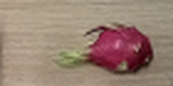
视觉工具实际返回图片 3
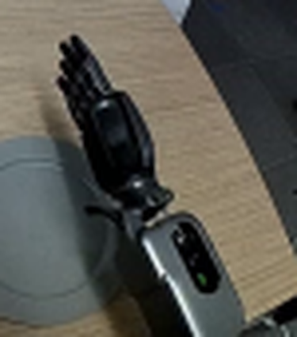
视觉工具实际返回图片 4
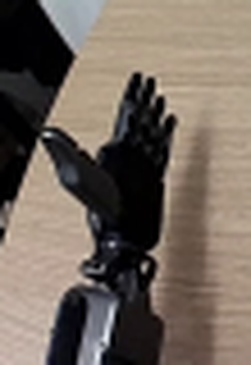
视觉工具实际返回图片 5
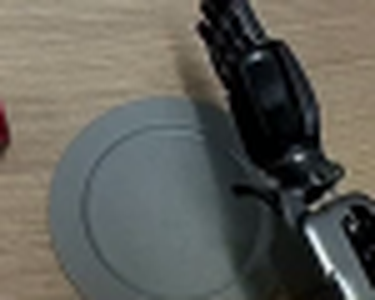
视觉工具实际返回图片 6
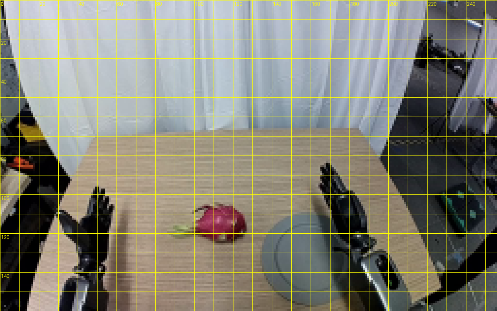
视觉工具实际返回图片 7
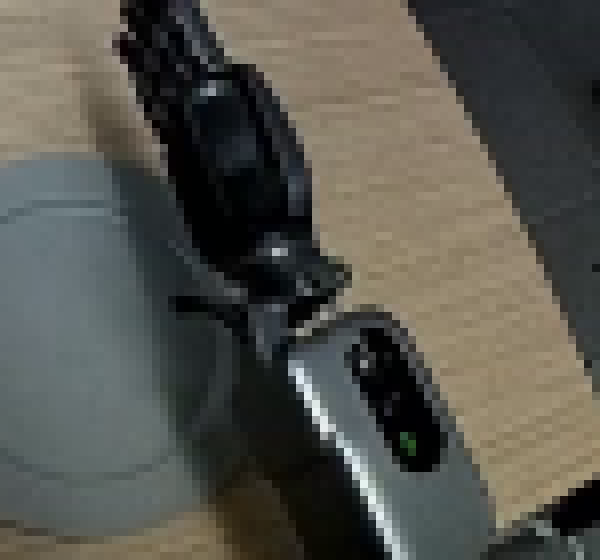
视觉工具实际返回图片 8
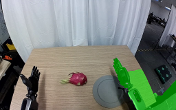
视觉工具实际返回图片 9
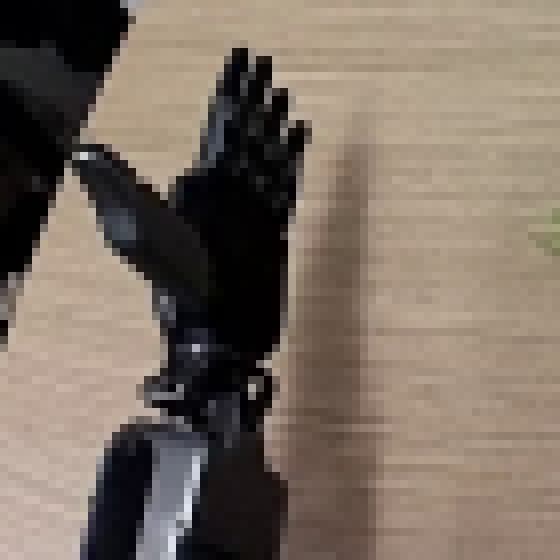
视觉工具实际返回图片 10
视觉工具实际返回图片 11

视觉工具实际返回图片 12
视觉工具实际返回图片 13
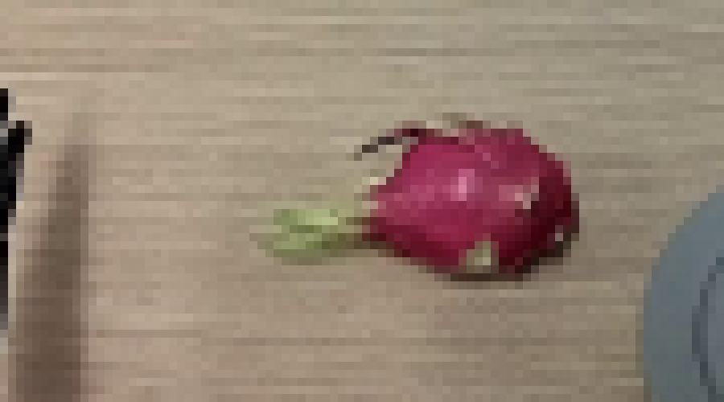
视觉工具实际返回图片 14
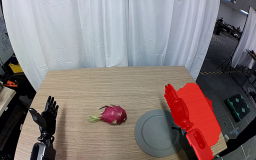
视觉工具实际返回图片 15
视觉工具实际返回图片 16
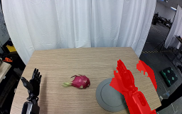
视觉工具实际返回图片 17
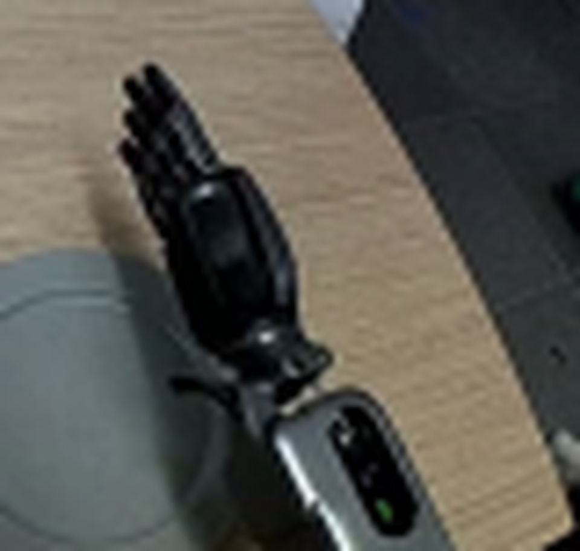
视觉工具实际返回图片 18
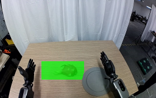
视觉工具实际返回图片 19
视觉工具实际返回图片 20
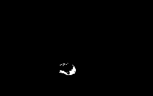
视觉工具实际返回图片 21
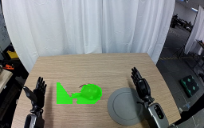
视觉工具实际返回图片 22
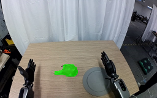
视觉工具实际返回图片 23
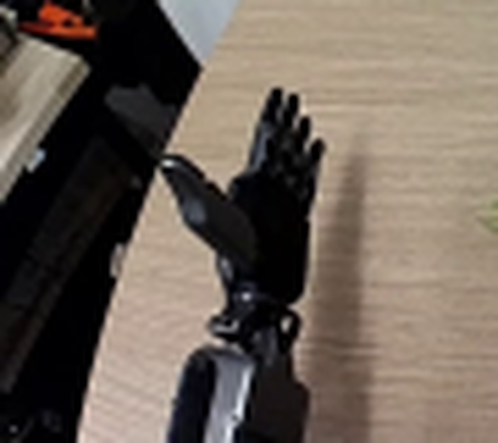
视觉工具实际返回图片 24
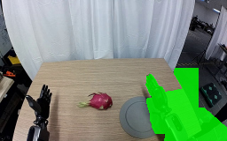
视觉工具实际返回图片 25
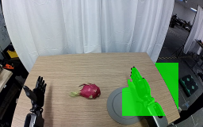
视觉工具实际返回图片 26
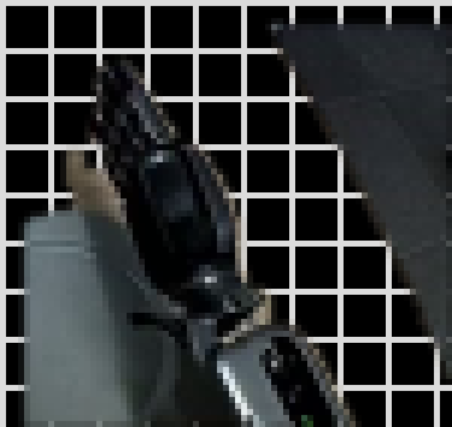
视觉工具实际返回图片 27
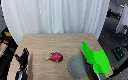
视觉工具实际返回图片 28
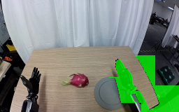
视觉工具实际返回图片 29
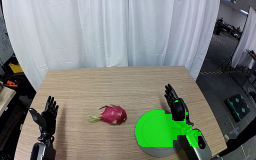
视觉工具实际返回图片 30
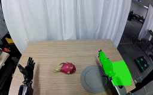
视觉工具实际返回图片 31
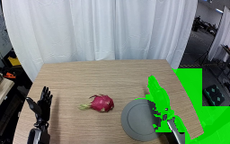
视觉工具实际返回图片 32
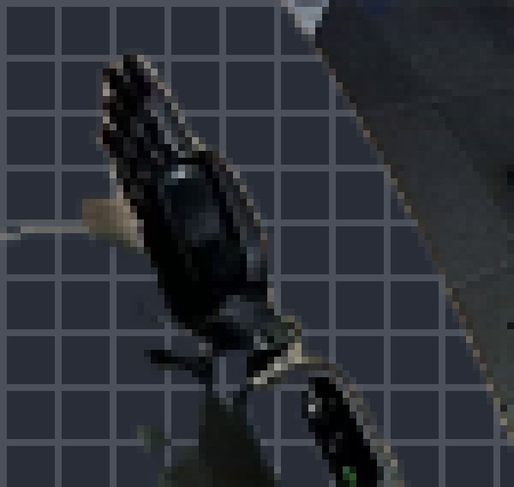
视觉工具实际返回图片 33
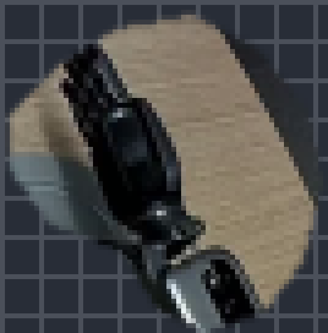
视觉工具实际返回图片 34
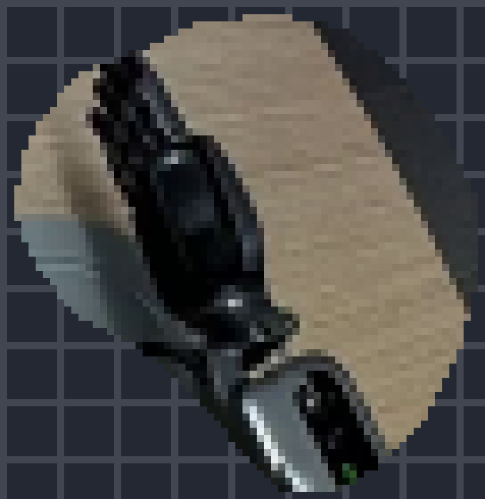
视觉工具实际返回图片 35
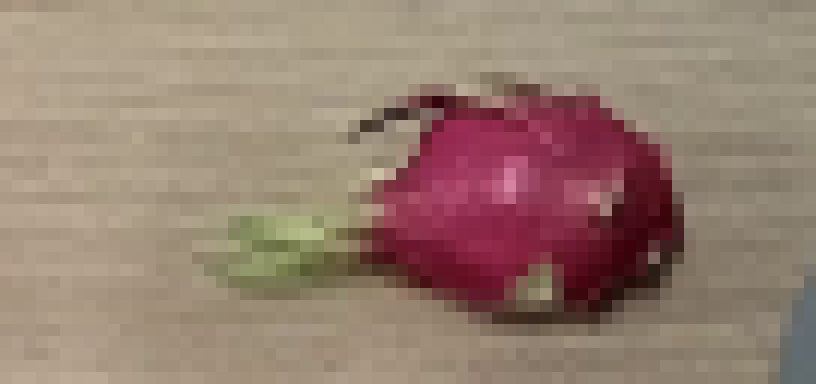
视觉工具实际返回图片 36
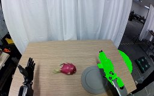
视觉工具实际返回图片 37
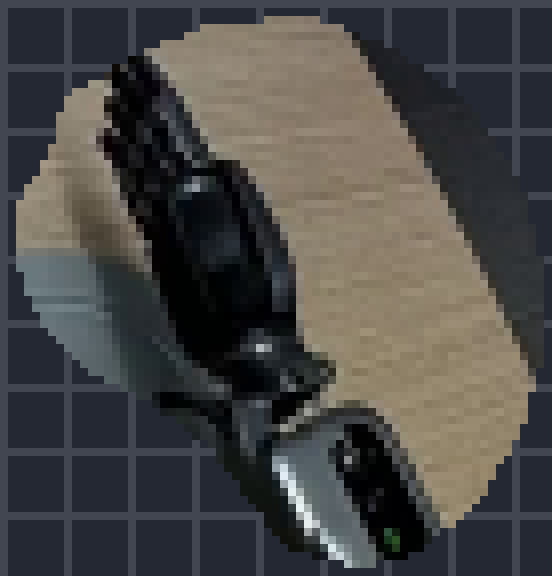
视觉工具实际返回图片 38
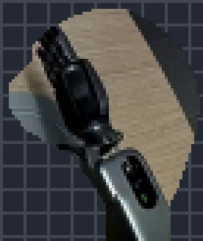
视觉工具实际返回图片 39
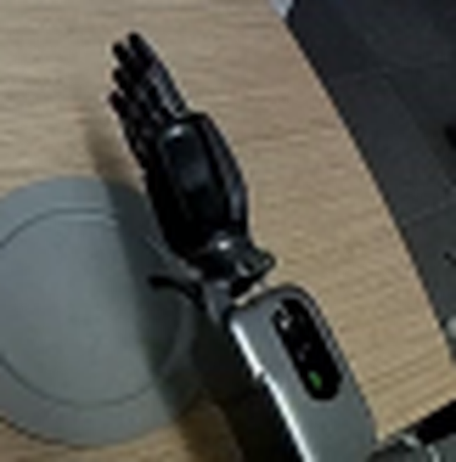
视觉工具实际返回图片 40
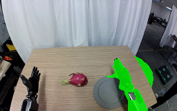
视觉工具实际返回图片 41
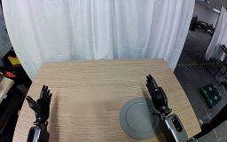
视觉工具实际返回图片 42
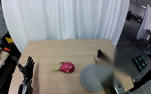
视觉工具实际返回图片 43
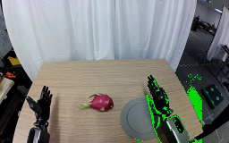
视觉工具实际返回图片 44
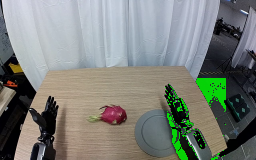
视觉工具实际返回图片 45
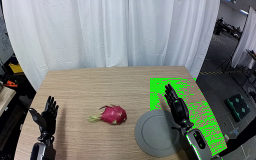
视觉工具实际返回图片 46
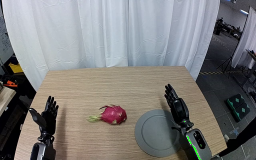
视觉工具实际返回图片 47
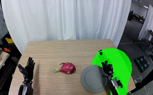
视觉工具实际返回图片 48
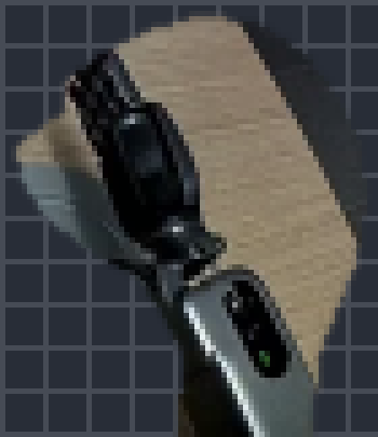
视觉工具实际返回图片 49
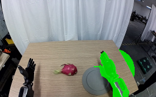
视觉工具实际返回图片 50
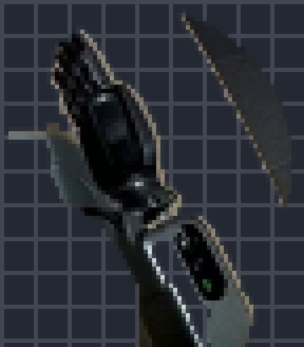
视觉工具实际返回图片 51
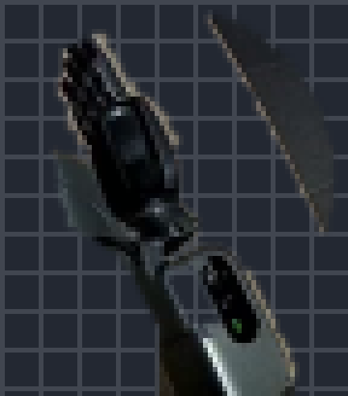
视觉工具实际返回图片 52
视觉工具实际返回图片 53
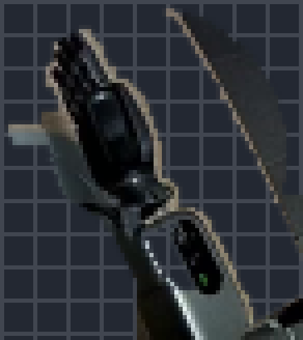
视觉工具实际返回图片 54
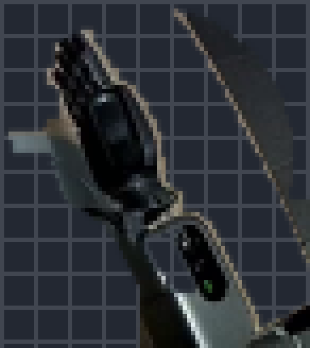
视觉工具实际返回图片 55
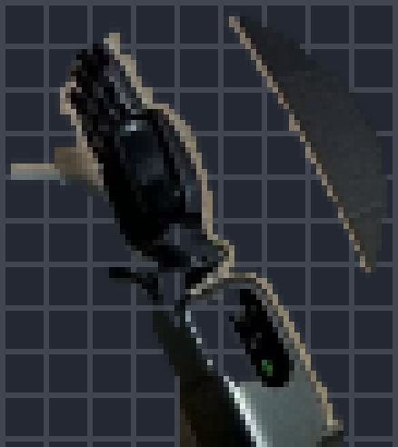
视觉工具实际返回图片 56
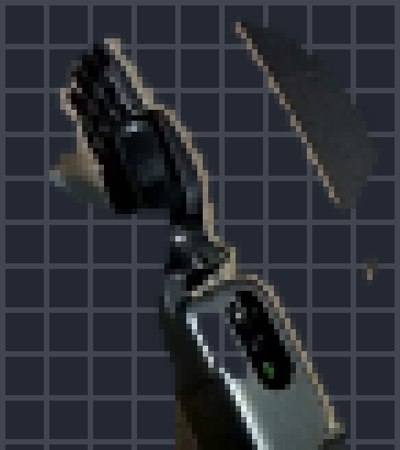
视觉工具实际返回图片 57
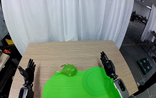
视觉工具实际返回图片 58
视觉工具实际返回图片 59
视觉工具实际返回图片 60
保存候选 0 份；完成命令 60 次；可验证图片返回 60 张。原始 API 响应与完整日志保留在本地。